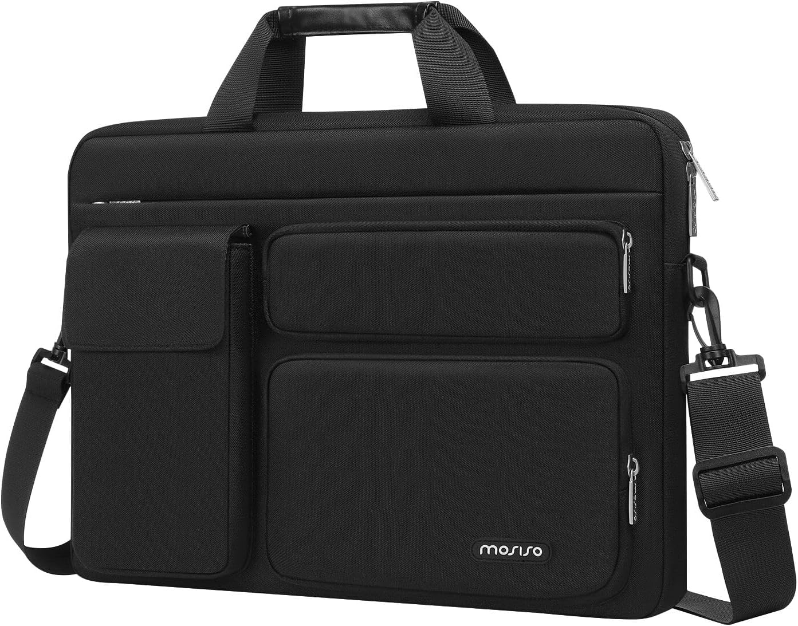

MOSISO Bolso Bandolera Portátil: el bolso del día 156
Fin de semana: otras reglas, otros ritmos. El bolso de hoy es el MOSISO Bolso Bandolera Portátil. No es un capricho de escaparate: es el que acompaña el bolso que no pide permiso, con 4,6★ de nota media y 4,600 valoraciones que respaldan la decisión.

Un bolso no cambia tu día. Cambia la manera de entrar en él: con lo que necesitas, sin lo que sobra y con la certeza de que otras 4,600 personas ya hicieron la misma elección antes que tú. Lo que más repiten sus compradoras: calidad.